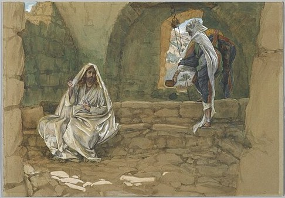
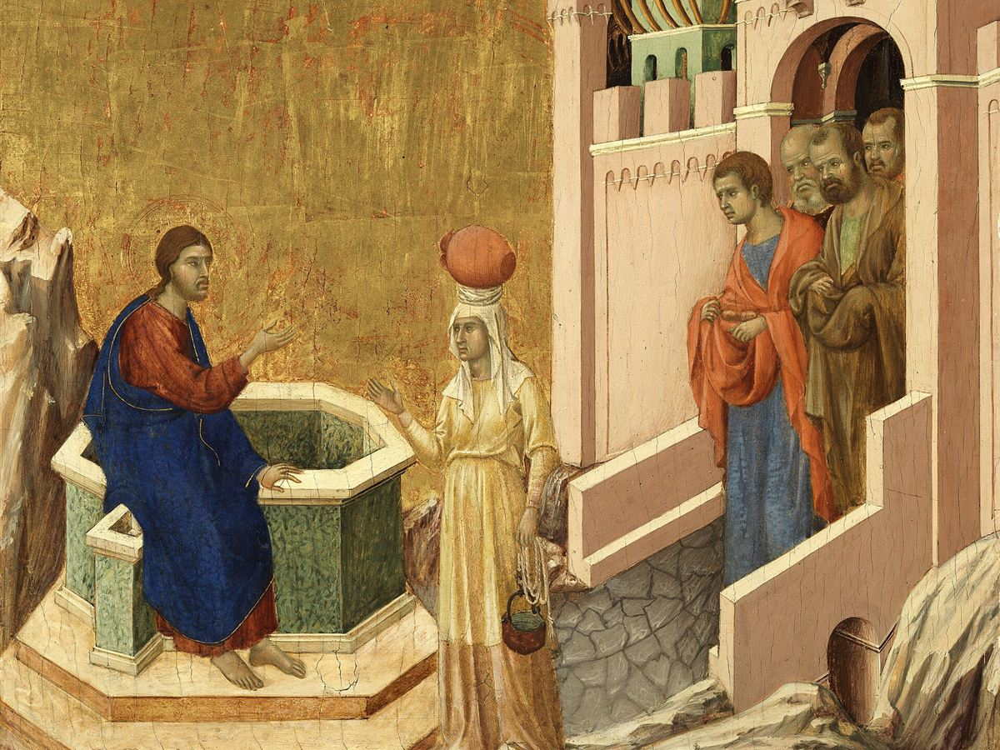
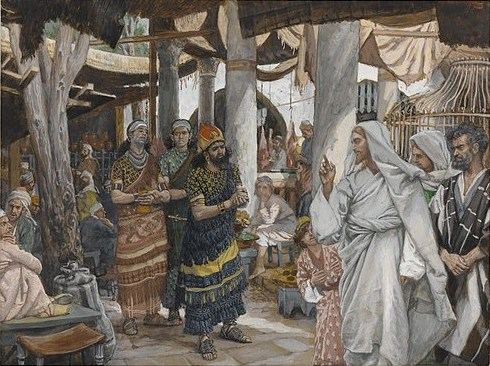

John 4
Living water
A tired Jesus sits at a well, meets a thirsty woman with a past, and a whole town finds the Saviour of the world.
Things to watch for
Keep these questions in the back of your mind as we read. We'll come back to every one of them at the end.
- Grace for outsidersWho will Jesus go out of his way to reach?
- Living waterWhat does Jesus offer a thirsty soul?
- Our pastWhat does Jesus do with the past we try to hide?
- WorshipWhat kind of worship does the Father seek?
- Being a witnessWhat can one changed life do?
- FaithWhat does it mean to take Jesus at his word?
Part one
A tired man at a well
Verses 1–15
Jesus goes where good Jews didn't go, to meet a woman who came alone.
“He must needs go”
Samaria sat right between Judaea and Galilee. Some strict Jews would rather cross the Jordan and take the long way around than set foot in it.
The direct road went straight through, about three days' walk. But this “must” is about more than a map. It's the same word as “Ye must be born again” and “the Son of man must be lifted up” (3:7, 14). Jesus had an appointment at a well.
Seven hundred years of bad blood
“And the king of Assyria brought men from Babylon, and from Cuthah, and from Ava, and from Hamath, and from Sepharvaim, and placed them in the cities of Samaria instead of the children of Israel…”
2 Kings 17:24
When Assyria conquered the northern kingdom of Israel, it moved foreigners in. They mixed with the Israelites who were left. Their descendants were the Samaritans: they kept the five books of Moses and worshipped on their own mountain.
The Jews called them half-breeds and heretics. The Samaritans returned the favour. Jesus walked right into the middle of it.

Noon at Jacob's well
Hours were counted from sunrise, so the sixth hour was about noon, the hottest part of the day.
Women usually drew water together in the cool of the morning or evening. This woman came alone, at noon, when no one else would be there. People who carry shame often plan their lives around avoiding other people.
And notice Jesus: “wearied with his journey.” Fully God, and fully a man who got tired, hungry, and thirsty. He knows what a long day feels like.

Three walls, one cup
Asking her for a drink meant sharing her water jar. To a strict Jew, a Samaritan's cup was unclean. With four words, “Give me to drink,” Jesus walked through three walls:
Living water
“Living water” meant running water, from a spring or a stream, as opposed to water sitting in a pit. She heard plumbing. Jesus meant life from God.
“For my people have committed two evils; they have forsaken me the fountain of living waters, and hewed them out cisterns, broken cisterns, that can hold no water.”
Jeremiah 2:13
Thirst again, or never thirst
Every man in recovery knows that first line. The drink, the high, the woman, the money: it hits, it fades, and you need more just to get back to even. It never fills the hole for long.
What Jesus gives isn't another hit. It's a well inside you, his own Spirit, springing up for good (John 7:37–39).
Part two
The whole truth
Verses 16–26
Jesus brings up her past, and then tells her who he is.
Known all the way down
He didn't bring it up to shame her. He brought it up so she would know that he knew all of it, and the offer of living water was still on the table.
Some of us have a past we'd rather nobody mentioned. Jesus already knows every bit of it. And he's still at the well.
“They looked unto him, and were lightened: and their faces were not ashamed.”
Psalm 34:5
“This mountain”
She could look up from the well and see it: Mount Gerizim, where the Samaritans had built their own temple. It had been in ruins for over a hundred years, but they still worshipped there.
Maybe it was an honest question. Maybe she was changing the subject. Either way, Jesus answered it honestly: the Samaritans had only part of God's word. The Messiah would come from the Jews, “salvation is of the Jews.”
But a new day was coming, when the place wouldn't matter at all.
Where do you worship?
- neither in this mountainnot the Samaritans' holy place
- nor yet at Jerusalemnot even the temple
- but in spirit and in truthfrom the heart, and by the truth God has shown, in Jesus
God is a Spirit, so he isn't stuck in a building. You can worship him at a well, in a cell, in a truck, or in this room.
And look who's doing the seeking: “the Father seeketh such.” She came looking for water. God came looking for her.
The KJV adds “he” to make good English. Jesus literally says, “I am, the one speaking to you.” It echoes God's own name: “I AM THAT I AM” (Exodus 3:14). This is the first time in John that Jesus plainly says he's the Messiah, and he says it to a Samaritan woman with a past.
Watch for “I am” all through John. Seven times he finishes the sentence:
- the bread of life6:35
- the light of the world8:12
- the door10:9
- the good shepherd10:11
- the resurrection, and the life11:25
- the way, the truth, and the life14:6
- the true vine15:1
Part three
White to harvest
Verses 27–42
She leaves her waterpot and brings back a town.
She left her waterpot
She came for water and forgot all about it. She'd found something better.
Notice who she ran to: the very people she'd been avoiding at noon. And notice what she told them: “a man, which told me all things that ever I did.” The thing she was most ashamed of became the heart of her story. Your past, handed to Jesus, can become the thing that points someone else to him.
Look on the fields
“Meat” in the KJV just means food. The disciples went to town for lunch. Jesus was fed by something else: doing his Father's will.
Grain turns pale when it's ripe. The disciples thought harvest was months off. Jesus said, Look up. Right then the Samaritans were walking out across the fields toward him. Some think the townspeople in their light-coloured clothes were the “white” fields he pointed to.
Someone sowed before you, and you get to reap. Somebody prayed for you, planted a seed, and never saw it come up. Now it's your turn to tell someone.
One, then many, then many more
Her word got them to Jesus. His word made them sure: “we have heard him ourselves.” That's how faith grows. Somebody brings you, and then you meet him for yourself.
“The Saviour of the world” appears only here in the Gospels, and it came from Samaritans. Outsiders saw it first: he didn't come for one nation. He came for the world.
Part four
Thy son liveth
Verses 43–54
A desperate father, a long walk home, and a word he chose to believe.
A long way down
A “nobleman” was a royal official, probably in the service of Herod the tetrarch, the ruler of Galilee. Money, rank, servants, and none of it could help his dying boy.
So he walked a long day uphill to beg Jesus to “come down.” Trouble has a way of bringing important men to the end of themselves. That's often where faith starts.

Go thy way; thy son liveth.
Jesus' “ye” in verse 48 is plural. He's talking to the whole crowd that wanted a show. The father didn't argue about it. He just kept begging: “Sir, come down ere my child die.”
Then Jesus wouldn't go. He only gave his word. No sign, no proof, no trip to Capernaum. And the man believed the word and started walking home.
That's faith: taking Jesus at his word before you can see how it turns out.
“So then faith cometh by hearing, and hearing by the word of God.”
Romans 10:17
The same hour
Miles apart, the same hour. Jesus didn't need to be in the room. His word is enough, wherever you are and wherever the people you love are.
Watch the man's faith grow: he believed enough to ask, then believed the word and went, then believed fully, “and his whole house.” One man's faith reached his whole family.
The second sign
- Water to wineJohn 2
- An official's son healedJohn 4
- A lame man walksJohn 5
- Five thousand fedJohn 6
- Walking on the seaJohn 6
- A blind man seesJohn 9
- Lazarus raisedJohn 11
Both signs happened in Cana. The first showed his glory over nature. This one shows his power over sickness and distance, with nothing but a word. And both ended the same way: people believed.
Points to remember
- Grace for outsiders“He must needs go through Samaria” 4:4Jesus crosses every wall to reach the people others avoid.
- Living water“Shall never thirst” 4:14Everything else leaves you thirsty again. He puts a spring inside you.
- Our past“Told me all things that ever I did” 4:29He knows all of it, and still offers living water. Your past can become your testimony.
- Worship“In spirit and in truth” 4:24Not a place, but a heart. And the Father is seeking worshippers.
- Being a witness“Come, see a man” 4:29One changed life brought a whole town to Jesus.
- Faith“The man believed the word” 4:50Take him at his word, then walk, before you see how it turns out.
Question 1 of 6
Grace for outsidersWho will Jesus go out of his way to reach?
What verses tell us about this?
“For the Son of man is come to seek and to save that which was lost.”
Luke 19:10
Answer
Anyone, and especially the people everyone else avoids. Jesus took the road others went around, to sit with a Samaritan woman nobody wanted to be seen with. He came to seek the lost. He's the Saviour of the world, and that includes you.
Question 2 of 6
Living waterWhat does Jesus offer a thirsty soul?
What verses tell us about this?
“In the last day, that great day of the feast, Jesus stood and cried, saying, If any man thirst, let him come unto me, and drink. He that believeth on me, as the scripture hath said, out of his belly shall flow rivers of living water.”
John 7:37–38
Answer
Living water: eternal life and his own Spirit, springing up inside the one who believes. It's a gift, free for the asking. Everything else we drink from leaves us thirsty again. What he gives never runs dry.
Question 3 of 6
Our pastWhat does Jesus do with the past we try to hide?
What verses tell us about this?
“They looked unto him, and were lightened: and their faces were not ashamed.”
Psalm 34:5
Answer
He brings it into the open, not to shame us, but so we know he knows all of it and still offers us living water. The woman who hid at noon ran into town telling everyone, “He told me all that ever I did.” Handed to Jesus, our past can become the story that brings others to him.
Question 4 of 6
WorshipWhat kind of worship does the Father seek?
What verses tell us about this?
Answer
Worship in spirit and in truth: from the heart, honest, and according to the truth God has shown us in Jesus. It isn't tied to a mountain or a building. And God isn't waiting to be found. The Father is out looking for worshippers like that.
Question 5 of 6
Being a witnessWhat can one changed life do?
What verses tell us about this?
Answer
Bring a whole town to Jesus. She had no training, no title, and a bad reputation. She just told what he'd done and said, “Come, see.” Her word got them to Jesus, and his word made them sure. You don't need to have it all figured out. Tell your story and point to him.
Question 6 of 6
FaithWhat does it mean to take Jesus at his word?
What verses tell us about this?
“So then faith cometh by hearing, and hearing by the word of God.”
Romans 10:17
Answer
It means believing what he says and acting on it before you see the result. The nobleman got no sign, only a promise, and he turned around and walked home on it. God's word is enough. Faith comes by hearing it, and grows as we watch him keep it.
Prayer requests
What can we pray about for you today?
“Let us therefore come boldly unto the throne of grace, that we may obtain mercy, and find grace to help in time of need.”
Hebrews 4:16